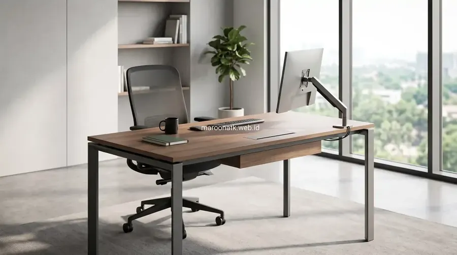
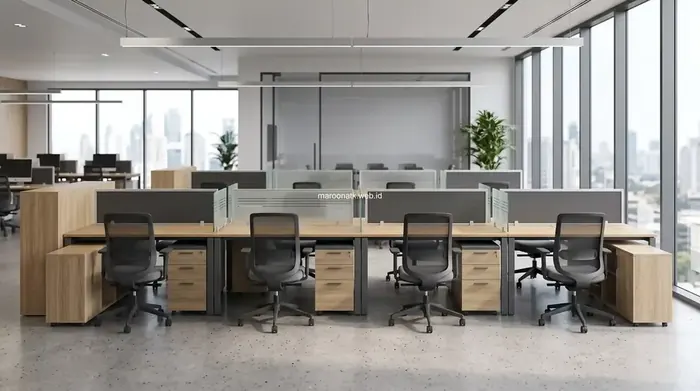

Penerapan Desain Meja Kerja Modern Minimalis pada Ruang Kantor Efisien
Desain meja kerja modern minimalis untuk ruang sempit memadukan dimensi kompak 100–120x60 cm, sistem workstation modular benching, dan rangka kaki baja ramping guna meningkatkan kapasitas staf hingga 30%. Dibuat dari material Melamine Faced Chipboard (MFC) Grade E1 dengan sistem kabel grommet terintegrasi, konsep ini memenuhi standar purchasing korporat lengkap dengan e-Faktur PPN 11% dan garansi struktur resmi.
Pertumbuhan harga sewa gedung perkantoran di kota-kota besar seperti Jakarta menuntut tim manajemen dan purchasing untuk memaksimalkan setiap meter persegi ruang kerja. Ruang kantor dengan denah terbatas kerap menghadapi tantangan penumpukan barang, jalur sirkulasi yang sempit, serta tampilan interior yang terkesan sesak. Oleh sebab itu, pemilihan desain meja kerja modern berbasis modular menjadi prioritas utama dalam menciptakan lingkungan kerja yang produktif, nyaman, dan tetap terlihat profesional di mata klien.
Melalui pendekatan desain minimalis, furniture kantor tidak hanya dinilai dari bentuk visualnya, melainkan dari efisiensi fungsional: bagaimana satu unit meja mampu mengakomodasi perangkat komputer, dokumen kerja harian, dan sistem perkabelan tanpa membebani kapasitas lantai. Bersama mitra pengadaan berpengalaman seperti Maroon ATK, perusahaan dapat merancang tata letak perabot yang adaptif terhadap dinamika ekspansi tim.

SOP Pengadaan Furniture Kantor B2B: Panduan Lengkap Purchasing Team
Pelajari 14 tahapan baku pengadaan furniture kantor mulai dari formulasi spesifikasi hingga inspeksi BAST di lokasi.
Tantangan Tata Ruang Kantor Sempit dan Solusi Furniture Minimalis
Mengelola ruang kantor dengan luas terbatas membutuhkan perhitungan cermat antara proporsi furnitur, pencahayaan alami, dan sirkulasi gerak karyawan. Berikut adalah beberapa tantangan umum beserta solusi rancangannya:
- Koridor Lalu Lintas Terhimpit: Penggunaan meja kerja besar dengan kedalaman di atas 80 cm sering kali memblokir akses jalur evakuasi atau lorong jalan staf. Solusinya adalah beralih ke kedalaman meja 50–60 cm yang tetap ergonomis untuk perangkat laptop dan monitor.
- Kabel Berantakan (Cable Clutter): Banyaknya kabel charger, CPU, dan telepon di bawah meja mempersempit ruang kaki. Meja kerja modern wajib dilengkapi lubang grommet dan cable tray horizontal di bawah top table.
- Penyimpanan Dokumen Memakan Tempat: Mengganti lemari arsip kayu berukuran masif dengan mobile drawer (laci dorong 3 susun) beroda yang pas diletakkan di bawah kolong meja.
Matriks Komparasi Desain Meja Kerja untuk Ruang Kerja Sempit
Untuk membantu purchasing team dan General Affairs memilih jenis meja yang paling sesuai dengan kapasitas ruang kantor, tabel matriks di bawah menyajikan perbandingan detail berbagai tipe meja:
| Jenis Meja | Kebutuhan Luas | Kapasitas Pengguna | Keunggulan Utama | Cocok Untuk |
|---|---|---|---|---|
| Meja Linear Minimalis | 1,2 – 1,8 m² per unit | 1 Staf per unit | Sangat fleksibel diatur berderet di tepi dinding | Ruang staf operasional, kantor ruko sempit |
| Meja L-Shape Kompak | 2,2 – 3,0 m² per unit | 1 Staf / Supervisor | Memanfaatkan sudut ruangan (dead corner) secara maksimal | Ruang manajer, akuntan dengan arsip aktif |
| Workstation Modular (Face-to-Face) | 4,5 – 5,5 m² (set 4 staf) | 2, 4, atau 6 Staf | Hemat luas hingga 30%, rangka bersama (shared leg) | Open-plan office, tim marketing & kreatif |
| Bench Workstation Linear | 3,8 – 4,8 m² (set 4 staf) | Multi-user berderet | Tampilan visual sangat bersih, mudah dipindah | Coworking space, tim customer service |
| Meja Kerja dengan Built-in Storage | 1,5 – 2,0 m² per unit | 1 Staf per unit | Mengeliminasi kebutuhan lemari arsip terpisah | Ruang administrasi sempit, kasir, HRD |

Konfigurasi meja kerja linear dengan partisi kaca buram dan laci bawah kolong memaksimalkan privasi kerja sekaligus menjaga keterbukaan visual di ruangan sempit.

Berapa Harga Paket Furniture Kantor per Workstation di Jakarta?
Rincian estimasi biaya paket workstation kantor kelas Basic hingga Premium untuk efisiensi anggaran pengadaan.
Keunggulan Workstation Modular untuk Kantor B2B
Workstation modular adalah standar emas penataan kantor modern masa kini. Sistem ini menawarkan sejumlah kelebihan struktural:
1. Meja Linear versus Meja L-Shape
Dalam ruangan sempit, meja model linear (persegi panjang lurus) lebih diunggulkan karena dapat disusun berhadap-hadapan atau memanjang di dinding secara modular. Namun, meja model L-shape sangat ideal diletakkan di sudut mati ruangan untuk staf yang membutuhkan area kerja ganda (komputer dan review dokumen fisik).
2. Manajemen Kabel dan Akses Daya Terintegrasi
Meja kantor modern yang baik dilengkapi jalur penghubung kabel (cable spine / ducting) yang menghubungkan stopkontak dinding ke soket meja. Hal ini mencegah korsleting listrik serta menjaga estetika ruang tetap rapi dan bebas kabel melintang.
3. Pemilihan Material dan Palet Warna Visual
Untuk ruang kerja sempit, pilihlah top table dengan material Melamine Faced Chipboard (MFC) atau MDF dengan finishing warna terang seperti Light Oak, White Ash, atau Warm Grey. Rangka kaki baja dengan finishing powder coating putih atau abu-abu muda mampu memantulkan cahaya sehingga ruangan terasa lebih lega.

Panduan Lengkap Pengadaan Furniture Kantor untuk Perusahaan
Simak strategi pemilihan supplier, negosiasi harga volume, dan standarisasi kualitas perabot perkantoran.
Pertimbangan Purchasing dan Pengadaan Furniture Kantor di Jakarta
Saat merencanakan pengadaan meja kantor untuk renovasi atau relokasi gedung baru, purchasing team disarankan memperhatikan poin verifikasi berikut:
- Ketebalan Top Table: Pastikan ketebalan papan meja minimal 25 mm dengan edging PVC 2 mm untuk mencegah lengkung akibat beban monitor berat.
- Garansi Rangka: Supplier terpercaya memberikan jaminan garansi rangka kaki baja minimal 1 hingga 2 tahun terhadap kerusakan sambungan las dan korosi.
- Kemudahan Perakitan Ulang (Knockdown): Sistem perakitan modular memungkinkan meja dibongkar dan dirakit kembali tanpa merusak struktur papan saat perusahaan pindah kantor.
- Akuntabilitas Transaksi B2B: Pastikan vendor berbadan hukum PT resmi yang menerbitkan e-Faktur PPN 11% dan Surat Penawaran Harga (SPH) resmi berkop perusahaan.
Konsultasikan Denah Ruang & Mock-Up Meja Bersama Maroon ATK
Layanan Desain 3D Layout & Penawaran Resmi B2B
Dapatkan solusi penataan meja kerja minimalis hemat tempat yang disesuaikan dengan dimensi ruangan kantor Anda. Gratis konsultasi denah dan penerbitan SPH resmi.
Kesimpulan: Optimalkan Ruang Kerja dengan Desain Meja Kerja Modern yang Tepat
Rangkuman Keputusan Purchasing
Keterbatasan luas ruang kerja bukan lagi penghalang untuk menciptakan kantor modern yang estetik dan produktif.
- Prioritaskan Modularitas: Gunakan workstation modular benching untuk menghemat luas lantai hingga 30% dan memudahkan penambahan staf di masa depan.
- Pastikan Kualitas Material: Pilih bahan MFC grade E1 ber-edging tebal dan rangka baja kokoh demi ketahanan masa pakai jangka panjang.
- Pilih Vendor Terpercaya: Bermitra dengan Maroon ATK untuk mendapatkan kepastian legalitas PT resmi, e-Faktur PPN 11%, serta instalasi profesional di lokasi.
Pertanyaan Umum (FAQ) Desain Meja Kerja Modern
Ukuran ideal meja kerja modern untuk ruang terbatas adalah panjang 100–120 cm dengan lebar 50–60 cm dan tinggi standar ergonomis 75 cm. Dimensi ini memberikan ruang gerak cukup untuk laptop, monitor, dan dokumen tanpa memakan koridor lalu lintas ruangan.
Workstation modular menggunakan sistem rangka bersama (shared legs) dan partisi terintegrasi sehingga menghemat luas lantai hingga 20–30%, mempermudah manajemen kabel internal (cable spine), serta fleksibel diatur ulang seiring pertumbuhan tim.
Ya, Maroon ATK melayani konsultasi denah layout 2D/3D gratis untuk proyek kantor B2B, penyediaan unit sampel fisik, penerbitan Surat Penawaran Harga (SPH) resmi berkop PT, e-Faktur PPN 11%, dan instalasi langsung oleh teknisi internal.

Arby Ardiansyah
Praktisi pengadaan B2B berpengalaman lebih dari 5 tahun dalam manajemen rantai pasok sarana kantor, penataan interior ergonomis korporat, dan e-procurement instansi pemerintah dan swasta di Indonesia.